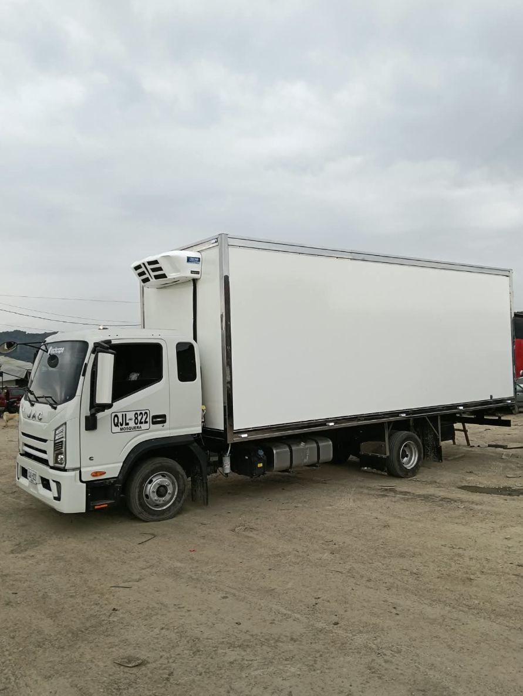
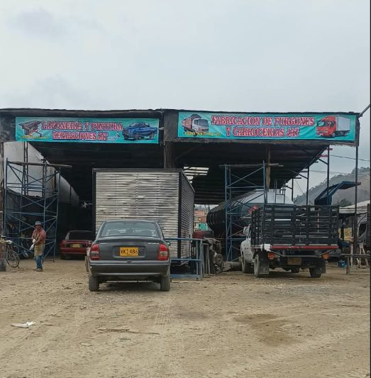

Fabricación de furgones y carrocerías
Fabricamos, reparamos y personalizamos furgones y carrocerías a la medida de tu operación. Taller en Cartagenita, Facatativá.

- 10 años de experiencia
- A la medida de cada operación
- Directo con el propietario
Taller de furgones en Facatativá con 10 años de oficio
En JAT fabricamos, reparamos y personalizamos furgones y carrocerías a la medida de tu operación.
Con 10 años de experiencia, nuestro taller en Cartagenita, Facatativá (Cundinamarca), atiende a transportadores y empresas que necesitan un furgón nuevo o una transformación completa.
Cada trabajo se hace con acabados cuidados y atención directa del propietario. Atendemos clientes de Facatativá, Madrid, Mosquera, Funza, Bogotá y el resto de la Sabana, además de otras regiones del país.
Servicios de furgones y carrocerías
Escríbenos por WhatsApp, cuéntanos qué necesitas y te enviamos una cotización.
Fabricación de furgones
Furgones nuevos, secos, refrigerados o tipo persiana, en aluminio o lámina, construidos según las medidas del chasis y la carga que transportas.
Reparación de furgones
Arreglamos golpes, desgaste y daños en la estructura del furgón o la carrocería del camión.
Latonería y pintura
Enderezado, preparación de superficie y pintura de furgones, carrocerías y piezas de cabina con acabado parejo.
Mantenimiento
Revisión y ajuste de puertas, bisagras, cerraduras, pisos y laterales para que el furgón siga trabajando.
Modificaciones y personalización
Transformamos furgones y carrocerías existentes para adaptarlos a una nueva operación.
Furgones fabricados en nuestro taller
Algunos de los furgones y carrocerías que han salido de nuestro taller.

Galería completa
Mira todos los furgones y carrocerías que hemos fabricado y reparado.
Ver todos los trabajosPreguntas frecuentes
- ¿Fabrican furgones refrigerados?
- Sí. Fabricamos furgones secos y refrigerados a la medida del chasis y de la carga que transportas.
- ¿Atienden clientes fuera de Facatativá?
- Sí. Trabajamos con transportadores y empresas de toda la Sabana de Bogotá (Madrid, Mosquera, Funza, Bogotá) y de otras regiones del país.
- ¿Reparan furgones y carrocerías que no fabricaron ustedes?
- Sí. Reparamos estructura, hacemos latonería y pintura, mantenimiento y modificaciones a furgones y carrocerías existentes.
- ¿Cómo pido una cotización?
- Escríbenos por WhatsApp al 320 743 0415, cuéntanos qué necesitas y te enviamos la cotización.
- ¿Dónde queda el taller?
- En Rompoy Cartagenita, Facatativá, Cundinamarca. Busca los avisos azules de JAT sobre la entrada.
Dónde está nuestro taller
Rompoy CartagenitaFacatativá, Cundinamarca
4°47'10.9"N 74°19'52.3"W
Busca los avisos azules de JAT sobre la entrada del taller.